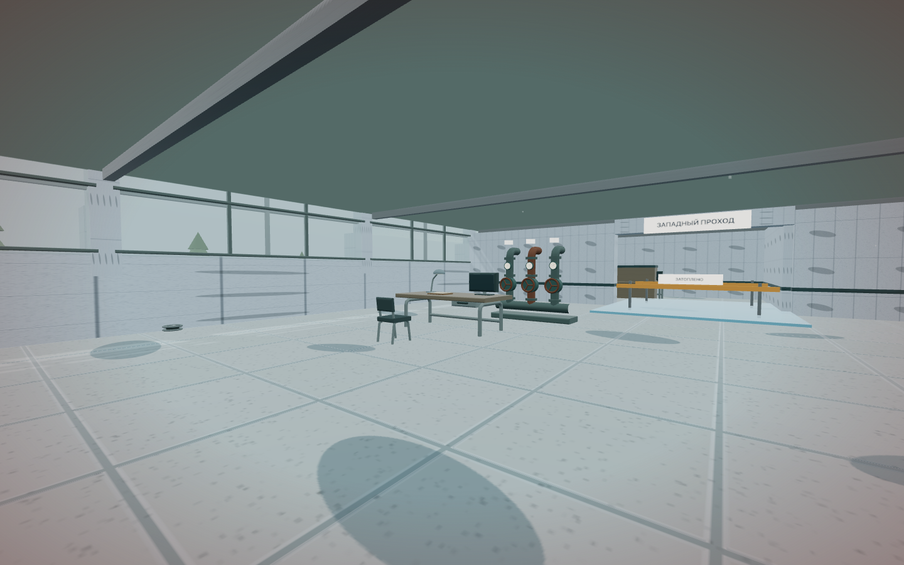
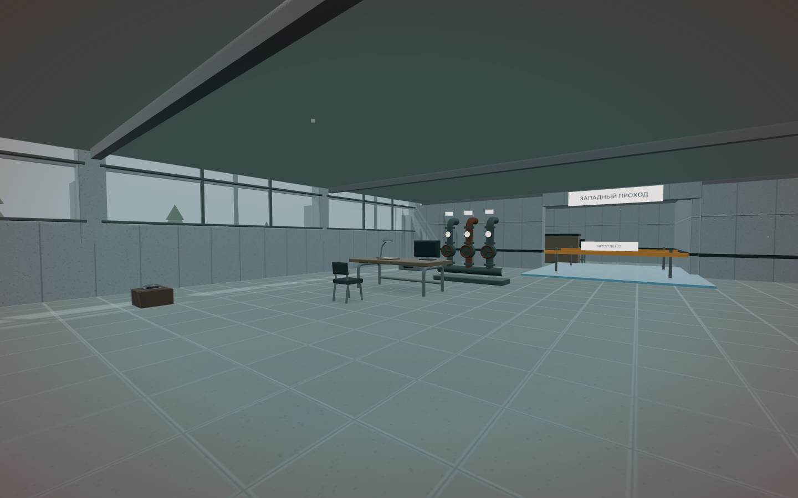

Проверены три эпохи, основной сюжет до «Возвращения», сохранения, таймер, управление, анимация персонажа и окружение. Для проверок использован отдельный сервер на 127.0.0.1:8876 с базой в /tmp/station17-qa. Пользовательская база data/game.sqlite3 не изменялась.
| Проблема | Что изменено |
|---|---|
| Vosk не распознавал «вперёд». | Добавлено написание с ё в акустическую грамматику. На одной и той же тестовой записи старый словарь возвращает пустой результат, исправленный распознаёт команду. Движение продолжается до «стой». Уменьшен аудиобуфер, звуки игры приглушаются при включённом микрофоне. |
| Удержание жеста обрывалось из-за краткой потери руки или уверенности. | Сокращено подтверждение жеста до 90 мс; подтверждённое движение сохраняется при кратком сбое до 450 мс. Срок актуальности кадров учитывает время распознавания; кадры уменьшены до 480 × 360. Ладонь останавливает сразу; длительная потеря рук и отключение камеры прекращают движение. |
| Персонаж шёл медленнее, чем обещало описание. | Фактические скорости 2,15 и 4,6 м/с заменены на 3,5 и 6,5 м/с. Разгон и торможение рассчитаны аналитически; проверено одинаковое расстояние при 10, 30, 60 и 144 FPS. Убран лимит времени кадра в 40 мс, замедлявший движение при низкой частоте кадров. |
| Процедурный шаг растягивал ноги и смещал обувь. | Сохранена исходная mocap-анимация ног. Фаза привязана к пройденному расстоянию; при остановке персонаж возвращается в покой. Ходьба больше не включает бег из-за старого порога скорости. |
| Руки расходились с ногами, локти и запястья принимали неверные положения. | Движение рук привязано к фактическому положению противоположных стоп. Правильные пары подтверждены на полном цикле обеих анимаций. Локоть сгибается вперёд: около 7° при ходьбе и 54° при беге. Убран дополнительный поворот позвоночника и принудительное наведение кистей; сохранено движение пальцев из исходных клипов, отклонение запястья от нейтральной позы ограничено. |
| На стенах и полу повторялись одинаковые пятна; текстуры растягивались. | Масштаб текстур учитывает реальные размеры поверхностей; шум и швы сделаны менее заметными. Повторяющиеся пятна убраны, следы воды размещены локально. Скорректированы свет и материалы эпох. |
| Таблички висели над оборудованием; катушки не имели опоры. | Таблички пульта и сейфа закреплены на корпусах. Пропорции текстовых панелей соответствуют их размерам. Декоративные катушки стоят на подставках. Исправлена ориентация настенных часов, добавлен циферблат. |
| Сквозь мелкие предметы можно было пройти. | Ящики, бочки, подставки, напольные знаки, огнетушители и растения используют общие координаты с серверными коллизиями. Проверена достижимость сюжетных объектов в каждой эпохе. |
| Окружение создавало большую нагрузку на отрисовку. | Неподвижные непрозрачные детали с одинаковым материалом объединяются. Дверь сейфа, клапан, роторы и скрываемые улики сохраняются отдельно. Добавлены мягкие контактные тени под оборудованием. |
| Позиция между взаимодействиями не сохранялась; Esc в приборе не включал паузу. | Снимки таймера сохраняют текущую позицию. При штатном уходе со страницы отправляется снимок паузы. Esc приостанавливает игру внутри диалога; продолжение восстанавливает его состояние. Ошибки сети вызывают повтор с задержкой вместо непрерывного потока запросов. |
| Достижение по-разному учитывало подсказки; параллельные запросы могли перезаписать прогресс. | Условия достижения едины для экрана и истории результатов. Ревизия перечитывается после захвата блокировки базы; конфликтующая запись отклоняется. Ошибка WebGL остаётся на экране после получения состояния с сервера. |
| Проверка | Результат и отчёт |
|---|---|
| Сервер, логика, HTTP, сохранения, коллизии и доступность объектов | 88 тестов пройдены. functional-tests.json |
| Распознавание команд и обработка жестов | 23 проверки пройдены. controls-tests.json |
| Таймер, движение при разных FPS, торможение и объединение моделей | 9 проверок пройдены: test_clock.mjs, test_locomotion.mjs, test_batching.mjs. Полный запуск: npm test. |
| Основной сюжет с реальным движением в Chrome | 7 проверок: модели, перенос, отчёт, ошибочная линия, ремонт, катушка, финал и сохранение. browser-current.json |
| Пауза, перезагрузка и ошибка WebGL | 4 проверки. browser-regressions.json |
| Настоящая модель Vosk | Отрицательный контроль старого словаря; исправленный словарь; полный путь синтетический микрофон → AudioWorklet → Vosk → движение → «стой». Словарь, микрофон и движение. |
| Настоящая модель MediaPipe | Две руки распознаны независимо. Удержание движения и вращения камеры в течение шести секунд, остановка после потери рук, освобождение камеры. two-hands-current.json |
| Скелет, противоположные пары конечностей и скорость | Полные циклы ходьбы и бега, отсутствие обратного сгиба локтей и чрезмерного растяжения голеней, стабильный покой. Скелет, скорость в браузере. |
| Визуальный обзор окружения | По восемь ракурсов в каждой эпохе: зал, архив, мастерская, цистерны, диспетчерская, западный проход, окна, крыша. 24 ракурса и метрики. |
Тесты моделей используют контролируемые данные: русскую синтетическую речь Milena и синтетическую камеру с фотографиями рук. Это проверяет настоящие локальные модели и игровой тракт, но не заменяет живую проверку конкретного микрофона, камеры, освещения и произношения. Проверки аварийного закрытия браузера без события ухода и игры с несколькими активными вкладками одновременно не выполнялись.


| Эпоха | Команды отрисовки до | После |
|---|---|---|
| 1978 | 615 | 175 |
| 2026 | 640 | 192 |
| 2074 | 544 | 206 |
Метрики сняты в контрольном ракурсе крыши зала. Они характеризуют число команд отрисовки, а не FPS на пользовательском компьютере. Объединение моделей уменьшает число команд, но может увеличивать количество видимых треугольников из-за более крупных границ отсечения.
Перезапустите локальный сервер игры и обновите страницу браузера. Для обычной игры используйте привычный запуск start.py --open. Проверки запускайте с отдельной базой, как указано в README.md.